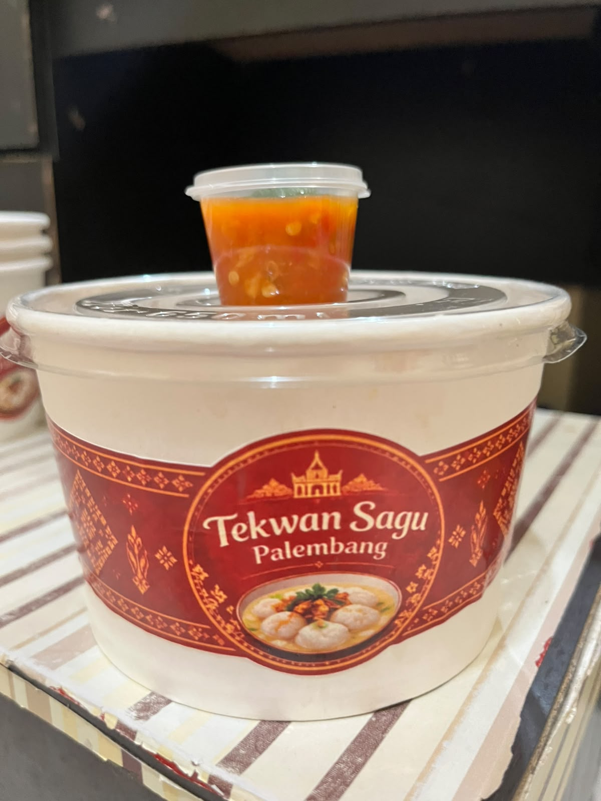
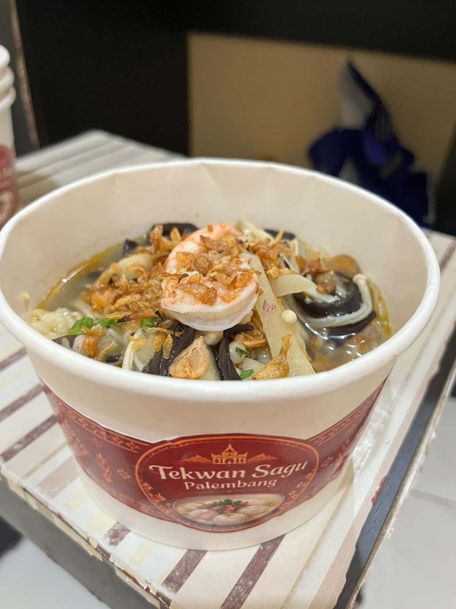
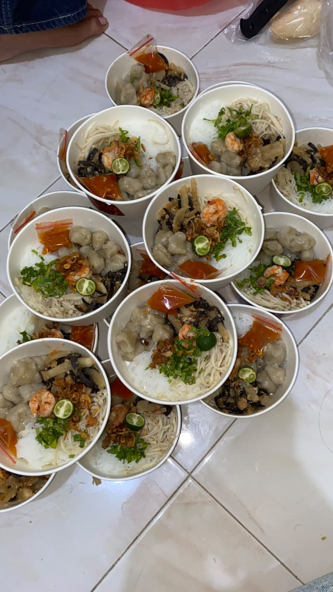

01 / TEKSTUR
Sagu Pilihan
Memberi tekstur lembut dan kenyal yang menjadi ciri khas tekwan.
Kenali isi semangkuknya
Setiap elemen punya perannya—dari tekstur tekwan sagu hingga pelengkap yang membuat kuah terasa semakin istimewa.

Memberi tekstur lembut dan kenyal yang menjadi ciri khas tekwan.

Kuah gurih dengan cita rasa udang yang menghangatkan setiap suapan.

Pelengkap dengan tekstur khas yang menambah variasi dalam semangkuk tekwan.
Racikan bumbu yang melengkapi kuah dengan aroma dan rasa yang akrab.
Foto di atas masih berupa placeholder. Detail bahan dan penyajian dapat disesuaikan dengan resep serta produk yang Anda gunakan.
Tanya atau pesan melalui WhatsApp